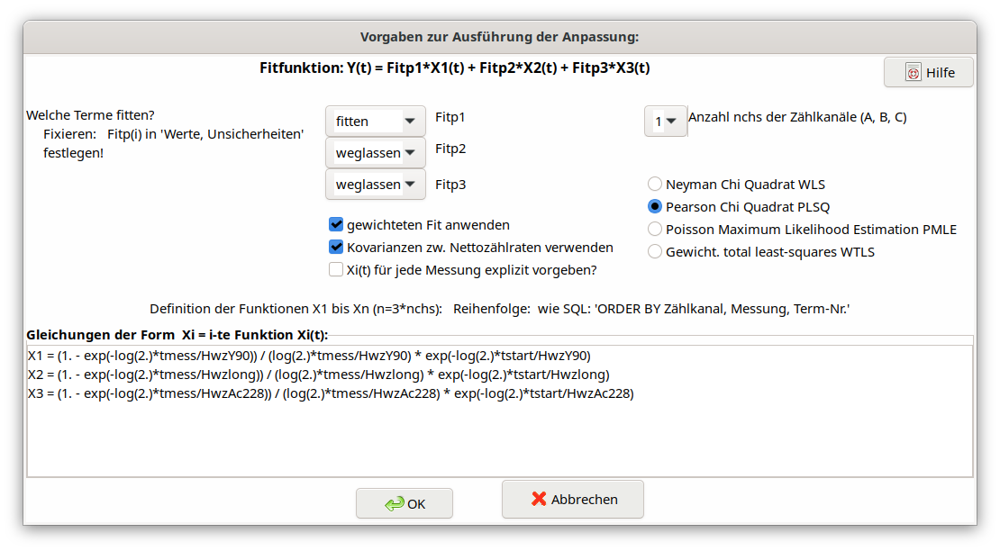

5.11. Dialog Festlegung des Modells der Abklingkurve¶
5.11.1. Eine einzige Ergebnisgröße vorhanden¶
Der Aufbau des Dialogs ist im folgenden Bild gezeigt.

In diesem Dialog wird das Lineares Least squares-Verfahren für den Fall der Analyse von komplexeren Abklingkurven \(Y\left( t_{k} \right)\) (Nettozählraten) dargestellt.
\(Y\left( t_{k} \right) = a_{1} \cdot X_{1}\left( t_{k} \right) + \ a_{2} \cdot X_{2}\left( t_{k} \right) + \ a_{3} \cdot X_{3}\left( t_{k} \right)\)
Die drei Terme beschreiben Beiträge von Radionuklid-Abklingfaktoren zu den Nettozählraten und hängen von der Zeit \(t_{k}\) für die k-te Messung und den Messdauern ab.
Für den Fall einer Y-90-Abklingkurve ist die Bedeutung der Terme wie folgt:
\[a_{1} X_{1}(t_{k})\]
|
\(a_{1} \bullet X_{1}\left( t_{k} \right):\) beschreibt das Abklingen der reinen Y-90-Komponente; \(a_{1}\) (in \(s^{-1}\)) ist die anzupassende Y-90-Nettozählrate zum Zeitpunkt der Y/Sr-Abtrennung; |
\[a_{2} X_{2}(t_{k})\]
|
\(a_{2} \bullet X_{2}\left( t_{k} \right):\) beschreibt den (praktisch) konstanten Zählratenbeitrag einer Verunreinigung mit einem langlebigen unbekannten Radionuklid (Halbwertszeit gleich unendlich angenommen, \(X_{2}\left( t_{k} \right)\) wird dann gleich 1 gesetzt). Als Beispiel kann hier Th-234 genannt werden; wenn dieses vorliegt, kann auch dessen Halbwertszeit Hwzlong (im TAB „Werte, Unsicherheiten”) spezifiziert werden; \(a_{2}\) (in \(s^{-1}\)) ist die anzupassende Amplitude dieser Komponente; |
\[a_{3} X_{3}(t_{k})\]
|
\(a_{3} \bullet X_{3}\left( t_{k} \right)`*:* beschreibt das Abklingen des relativ kurzlebigen Ac-228, das als Verunreinigung im Y-Oxalatpräparat auftreten kann; dieser Term kann auch verwendet werden, wenn der Verdacht auf kürzerlebige Verunreinigungen durch Radon-Folgeprodukte besteht; :math:`a_{3}\) (in \(s^{-1}\)) ist die anzupassende Amplitude dieser Komponente; |
Der Benutzer kann auswählen, ob der 2. und/oder 3. Term bei der Anpassung verwendet werden soll.
Weiterhin kann er wählen, ob eine mit den inversen Varianzen der Nettozählraten gewichtete Anpassung (Fit) durchgeführt werden soll - oder ungewichtet. Die interne Verwendung der Kovarianzen der gemessenen Nettozählraten kann (zum Testen) auch abgewählt werden.
Eine Auswahlliste in diesem Dialog erlaubt es, das Anpassungsverfahren aus vier Varianten auszuwählen: WLS, PLSQ, PMLE und WTLS. Das komplexere und rechenintensivere Total least squares-Verfahren (WTLS) ist in der Lage, Unsicherheiten der \(X_{i}\left( t_{k} \right)\)-Werte und Kovarianzen zwischen ihnen direkt zu berücksichtigen. Chi-Quadrat-Optionen
Eine Checkbox in diesem Dialog erlaubt es, anstelle der einfacheren LSQ-Analyse (WLS) das allgemeinere, aufwändigere, aber auch rechenintensivere general least squares-Verfahren (WTLS) zu wählen. Letzteres kann direkt auch Unsicherheiten der \(X_{i}\left( t_{k} \right)\)-Werte und Kovarianzen zwischen ihnen berücksichtigen.
In den meisten Fällen unterscheiden sich die Term-Funktionen Xi(t) zwischen einzelnen Messungen nur in der verwendeten Zeitdifferenz zur Sr-/Y-Abtrennung (Parameter t: tstart). Daher brauchen die Funktionen Xi(t) nur für die 1. Messung (bei mehreren Messkanälen: für die 1. Messung jeden Messkanals) aufgeführt werden.
Die darin enthaltenen Werte der Zählausbeuten können sich jedoch nunmehr von Messung zu Messung unterscheiden. In diesem Fall, was über eine neue Checkbox selektiert werden kann, müssen alle Term-Funktionen für jede Messung explizit eingegeben werden. Dies verlängert die Argumentliste des Linfit-Aufrufs um zusätzliche Werte der Zählausbeuten;
seit Version 2.4.24 müssen diese Nachweiseffizienz-Parameter nicht mehr explizit im Linfit-Aufruf angegeben werden. Siehe das neue Beispiel-Projekt Sr89-Sr90_IAEA_AQ-27_2013_V2_EN.txp, das dies zeigt.
In einem Textfeld des Dialogs können die Gleichungen für die drei Funktionen \(X_{i}\left( t_{k} \right)\) angegeben werden. Für das oben verwendete Beispiel der Analyse einer Y-90-Abklingkurve wird folgendes eingegeben:
X1 = (1. - exp(-log(2.)*tmess/HwzY90)) / (log(2.)*tmess/HwzY90) \*
exp(-log(2.)*tstart/HwzY90)
X2 = (1. - exp(-log(2.)*tmess/Hwzlong)) / (log(2.)*tmess/Hwzlong) \*
exp(-log(2.)*tstart/Hwzlong)
X3 = (1. - exp(-log(2.)*tmess/HwzAc228)) / (log(2.)*tmess/HwzAc228) \*
exp(-log(2.)*tstart/HwzAc228)
Hierin sind tmess die Messdauer(n) und tstart die Zeitdauer(n) zwischen Y-90/Sr-90-Trennung und dem Start der Messung(en). Beide Variablen stellen tatsächlich Felder dar, so dass Werte dafür in einem dafür ausgelegten Windows-Dialog für jede Einzelmessung eingegeben werden können. Hwzxxx sind die Radionuklid-bezogenen Halbwertszeiten. Die Formeln berücksichtigen auch den radioaktiven Zerfall während der Messungen.
Unter Verwendung der neuen Abklingfunktion fd() verkürzen sich die Gleichungen:
X1 = fd(tstart, tmess, log(2)/HwzY90)
X2 = fd(tstart, tmess, log(2)/Hwzlong)
X3 = fd(tstart, tmess, log(2)/HwzAc228)
5.11.2. Erweiterung auf zwei oder drei Ergebnisgrößen¶
Erweiterung auf zwei oder drei Ergebnisgrößen
Bei der gleichzeitigen Messung von z. B. Sr-90, Sr-89 und möglicherweise auch Sr-85 mit einem LSC-Zähler werden die Beiträge dieser Radionuclide zu den Zählraten in zwei oder drei Zählkanälen (Energiebereichen), bezeichnet als A, B und C, bestimmt. Weitere Einzelheiten sind dem Bericht AKU (2008) zu entnehmen, der sich mit modernen Methoden der Sr-89/Sr-90-Bestimmung befasst.
Die Anzahl der Zählkanäle (nchs) kann im Dialog gewählt werden. Im vorliegenden Fall sind bis zu drei Abklingkurven \(Y_{A}\left( t_{k} \right)\), \(Y_{B}\left( t_{k} \right)\) und \(Y_{C}\left( t_{k} \right)\) zu berücksichtigen. Dann werden bis zu drei Modellgleichungen verwendet statt nur einer:
\(Y_{A}\left( t_{k} \right) = a_{1} \cdot X_{A1}\left( t_{k} \right) + \ a_{2} \cdot X_{A2}\left( t_{k} \right) + \ a_{3} \cdot X_{A3}\left( t_{k} \right)\)
\(Y_{B}\left( t_{k} \right) = a_{1} \cdot X_{B1}\left( t_{k} \right) + \ a_{2} \cdot X_{B2}\left( t_{k} \right) + \ a_{3} \cdot X_{B3}\left( t_{k} \right)\)
\(Y_{C}\left( t_{k} \right) = a_{1} \cdot X_{C1}\left( t_{k} \right) + \ a_{2} \cdot X_{C2}\left( t_{k} \right) + \ a_{3} \cdot X_{C3}\left( t_{k} \right)\)
In diesem Falle stellen die Fitparameter \(a_{i}\ \) Aktivitäten dar, nicht Zählraten wie in dem einfachen Beispiel ganz oben. Diese Parameter werden vom Programm selbständig als neue Symbole FITP1, FITP2 und FITP3 in die Liste der Symbole eingefügt.
Programmtechnisch wird dieser Fall auf den einer einzigen Abklingkurve reduziert, indem man die drei Zählratenfelder aneinanderhängt (Reihenfolge A, B und C), desgleichen die unabhängigen Abklingfunktionen:
Zählraten:
\(Y\left( t_{k} \right) = \left\{ \begin{array}{r} Y_{A}\left( t_{k} \right) \\ Y_{B}\left( t_{k} \right) \\ Y_{C}\left( t_{k} \right) \end{array} \right\}\)
Abklingfunktionen: Eingabe in das Dialogfeld für die Terme:
\[X_{A1}\left( t_{k} \right)\]
|
\[X1 = \ldots\]
|
|---|---|
\[X_{A2}\left( t_{k} \right)\]
|
\[X2 = \ldots\]
|
\[X_{A3}\left( t_{k} \right)\]
|
\[X3 = \ldots\]
|
\[X_{B1}\left( t_{k} \right)\]
|
\[X4 = \ldots\]
|
\[X_{B2}\left( t_{k} \right)\]
|
\[X5 = \ldots\]
|
\[X_{B3}\left( t_{k} \right)\]
|
\[X6 = \ldots\]
|
\[X_{C1}\left( t_{k} \right)\]
|
\[X7 = \ldots\]
|
\[X_{C2}\left( t_{k} \right)\]
|
\[X8 = \ldots\]
|
\[X_{C3}\left( t_{k} \right)\]
|
\[X9 = \ldots\]
|
Zum besseren Verständnis der Anwendung wird auf das Beispiel-Projekt DWD-LSC-3kanal-V2_DE.txp verwiesen, das einer sehr ausführlichen Darstellung der Bestimmungsgleichungen des Reports AKU (2008; Seite 160) entspricht. Für diesen Fall lauten die neun Abklingfunktionen:
X1 = eSr89A \* (1. - exp(-lamSr89*tmess)) / (lamSr89*tmess) \*
exp(-lamSr89*(tAS+tstart))
X2 = eSr90A \* (1. - exp(-lamSr90*tmess)) / (lamSr90*tmess) \*
exp(-lamSr90*(tAS+tstart)) +eY90A \* &
lamY90/(tmess*(lamY90-lamSr90)) \*(
-exp(-lamSr90*(tAS+tstart))/lamSr90*(exp(-lamSr90\* &
tmess)-1.)+exp(-lamY90*(tAS+tstart))/lamY90*(exp(-lamY90*tmess)-1.) )
X3 = eSr85A \* (1. - exp(-lamSr85*tmess)) / (lamSr85*tmess) \*
exp(-lamSr85*(tAS+tstart))
X4 = eSr89B \* (1. - exp(-lamSr89*tmess)) / (lamSr89*tmess) \*
exp(-lamSr89*(tAS+tstart))
X5 = eSr90B \* (1. - exp(-lamSr90*tmess)) / (lamSr90*tmess) \*
exp(-lamSr90*(tAS+tstart)) +eY90B \* &
lamY90/(tmess*(lamY90-lamSr90)) \*(
-exp(-lamSr90*(tAS+tstart))/lamSr90*(exp(-lamSr90\* &
tmess)-1.)+exp(-lamY90*(tAS+tstart))/lamY90*(exp(-lamY90*tmess)-1.) )
X6 = eSr85B \* (1. - exp(-lamSr85*tmess)) / (lamSr85*tmess) \*
exp(-lamSr85*(tAS+tstart))
X7 = eSr89C \* (1. - exp(-lamSr89*tmess)) / (lamSr89*tmess) \*
exp(-lamSr89*(tAS+tstart))
X8 = eSr90C \* (1. - exp(-lamSr90*tmess)) / (lamSr90*tmess) \*
exp(-lamSr90*(tAS+tstart)) +eY90C \* &
lamY90/(tmess*(lamY90-lamSr90)) \*(
-exp(-lamSr90*(tAS+tstart))/lamSr90*(exp(-lamSr90\* &
tmess)-1.)+exp(-lamY90*(tAS+tstart))/lamY90*(exp(-lamY90*tmess)-1.) )
X9 = eSr85C \* (1. - exp(-lamSr85*tmess)) / (lamSr85*tmess) \*
exp(-lamSr85*(tAS+tstart))
Hierin werden anstelle der Halbwertszeiten die Zerfallskonstanten lamNuklid verwendet. Die mit einem kleinen e beginnenden Symbole bezeichnen Nachweiswahrscheinlichkeiten der verschiedenen Radionuklide in den Zählkanälen A, B und C.
Unter Verwendung der neuen Abklingfunktion fd() verkürzen sich die Gleichungen:
X1 = eSr89A \* fd(tAS+tstart,tmess,lamSr89)
X2 = eSr90A \* fd(tAS+tstart,tmess,lamSr90) + &
eY90A \* lamY90/(lamY90-lamSr90) \* ( fd(tAS+tstart,tmess,lamSr90) -
fd(tAS+tstart,tmess,lamY90) )
X3 = eSr85A \* fd(tAS+tstart,tmess,lamSr85)
X4 = eSr89B \* fd(tAS+tstart,tmess,lamSr89)
X5 = eSr90B \* fd(tAS+tstart,tmess,lamSr90) + &
eY90B \* lamY90/(lamY90-lamSr90) \* ( fd(tAS+tstart,tmess,lamSr90) -
fd(tAS+tstart,tmess,lamY90) )
X6 = eSr85B \* fd(tAS+tstart,tmess,lamSr85)
X7 = eSr89C \* fd(tAS+tstart,tmess,lamSr89)
X8 = eSr90C \* fd(tAS+tstart,tmess,lamSr90) + &
eY90C \* lamY90/(lamY90-lamSr90) \* ( fd(tAS+tstart,tmess,lamSr90) -
fd(tAS+tstart,tmess,lamY90) )
X9 = eSr85C \* fd(tAS+tstart,tmess,lamSr85)
Der Beitrag des vierten anwesenden Radionuklids, Y-90, welches aus dem Zerfall von Sr-90 nachwächst, wird hier durch zusätzliche Terme mit eY90X in den Ausdrücken für X2, X5 und X8 berücksichtigt.
Wurde für die Effizienzkalibrierierung der zwei bis drei Energiefenster dieselbe Kalibrieraktivität Acal eines Radionuklids verwendet, so sind diese Effizienzen korreliert. Ihre Kovarianzen, paarweise gegeben durch
\(cov\left( \varepsilon_{N},\ \varepsilon_{M} \right) = \varepsilon_{N}\ \varepsilon_{M}\ u_{rel}^{2}(A_{cal})\)
sind für jedes Paar von Energiefenstern N und M, getrennt für die betreffenden Radionuklide, im Kovarianzraster unter dem TAB „Values, uncertainties” einzutragen.
5.11.3. Organisation der Xi-Funktionen¶
Anzahl der Xi-Formeln = (Anzahl der Messkanäle) x (Anzahl der angewandten Ergebnisgrößen)
(angewandte Ergebnisgrößen: Anpassungsparameter, für die „fit” oder „fixed” gewählt wurde)
or
Anzahl der Xi-Formeln = (Anzahl der Messungen) x (Anzahl der verwendeten Ergebnisgrößen) x (Anzahl der Zählkanäle)
(falls eine Xi-Formel explizit für jede einzelne Messung definiert wird)
Wichtig
Die einzuhaltende Reihenfolge der Xi-Formeln ist in den beiden folgenden Beispielen angedeutet. Sie entspricht formal der Reihenfolge, die sich aus einem SQL-Statement ergäbe:
„ORDER BY counting channel, number of measurements, number of output quantity”.
Beispiel 1: Fall a): 2 Messkanäle, 4 Messungen, 3 Ergebnisgrößen; die Xi(t) unterscheiden sich zwischen den Messungen
Messkanal |
Nr. der Messung |
Index von Xi(t) |
laufende Nr. |
|---|---|---|---|
1 |
1 |
1 |
1 |
1 |
1 |
2 |
2 |
1 |
1 |
3 |
3 |
1 |
2 |
1 |
4 |
1 |
2 |
2 |
5 |
1 |
2 |
3 |
6 |
1 |
3 |
1 |
7 |
1 |
3 |
2 |
8 |
1 |
3 |
3 |
9 |
1 |
4 |
1 |
10 |
1 |
4 |
2 |
11 |
1 |
4 |
3 |
12 |
2 |
1 |
1 |
13 |
2 |
1 |
2 |
14 |
2 |
1 |
3 |
15 |
2 |
2 |
1 |
16 |
2 |
2 |
2 |
17 |
2 |
2 |
3 |
18 |
2 |
3 |
1 |
19 |
2 |
3 |
2 |
20 |
2 |
3 |
3 |
21 |
2 |
4 |
1 |
22 |
2 |
4 |
2 |
23 |
2 |
4 |
3 |
24 |
Beispiel 2: Fall b), wie Beispiel 1, aber die Xi(t) unterscheiden sich NICHT zwischen den Messungen:
Messkanal |
Nr. der Messung |
Index von Xi(t) |
laufende Nr. |
|---|---|---|---|
1 |
1 |
1 |
1 |
1 |
1 |
2 |
2 |
1 |
1 |
3 |
3 |
2 |
1 |
1 |
4 |
2 |
1 |
2 |
5 |
2 |
1 |
3 |
6 |
5.11.4. Einen Fitparameter fixieren¶
Für die Terme \(a_{j} \bullet X_{j}\left( t_{k} \right)\) gibt es drei Möglichkeiten der Berücksichtigung:
Die Option „fixieren” wurde nötig, um auch solche Projekte bearbeiten zu können, bei denen Sr-85 als Tracer verwendet wird, aber in der Weise, dass die Sr-85-Aktivität nicht Fitparameter ist. In solch einem Fall wird die Sr-Ausbeute durch eine separate Gamma-Messung bestimmt, so dass die bei der Betamessung auftretende Sr-85-Zählrate unabhängig vom Fitten berechnet werden kann. Dazu stellt man für die Sr-85-Komponente die Auswahl auf „fixieren” ein.
Da die Fitroutine in diesem Fall die Unsicherheit der Sr-85-Aktivität bzw. -zählrate nicht einbeziehen kann, wurde eine Sonderbehandlung eingeführt. Zunächst wird für jede der Bruttomessungen die Sr-85-Beta-Zählrate (und ihre Unsicherheit) berechnet und von den schon erhaltenen Nettozählraten \(R_{n}\left( t_{i} \right)\) abgezogen.
Hierin bedeuten: \(A_{85g}\) die gammaspektrometrisch bestimmte Sr-85-Aktivität; \(\varepsilon_{85b}\) die Sr-85-Beta-Zählausbeute und \(\lambda_{85}\) die Sr-85-Zerfallskonstante.
Die Funktion \(X_{3}\) wird vom Anwender selbst durch diejenige Gleichung definiert, die im Dialog für das Modell der Abklingkurve als Gleichung für X3 eingegeben wird. Ein Beispiel dafür:
X3 = ASr85_Gam * eSr85 * (1. - exp(-lamSr85*tmess)) / (lamSr85*tmess) * exp(-lamSr85*(tAS+tstart))
Der dazugehörige festzuhaltende Fitparameter \(a_{3}\) wird dabei intern auf den Wert 1 gesetzt. Fasst man hierin die Eingangsgrößen \(A_{85g}\), \(\varepsilon_{85b}\) und \(\lambda_{85}\) in einem Vektor \(z\) zusammen, \(z = \left( A_{85g},\varepsilon_{85b},\lambda_{Sr85} \right)^{T}\), ist die für die Unsicherheitsfortpflanzung benötigte Kovarianzmatrix wie folgt zu berechnen:
diagonale Werte:
\(u^{2}\left( R_{nk}\left( t_{i} \right) \right) = u^{2}\left( R_{n}\left( t_{i} \right) \right) + \sum_{j = 1}^{3}\left( \frac{\partial R_{nk}\left( t_{i} \right)}{\partial z_{j}} \right)^{2}u^{2}\left( z_{j} \right)\)
nicht-diagonale Werte:
\(u\left( R_{nk}\left( t_{i} \right),R_{nk}\left( t_{k} \right) \right) = {u\left( R_{nk}\left( t_{k} \right),R_{nk}\left( t_{i} \right) \right) = u}^{2}\left( R_{BG} \right) + \sum_{j = 1}^{3}{\frac{\partial R_{nk}\left( t_{i} \right)}{\partial z_{j}}\ \frac{\partial R_{nk}\left( t_{k} \right)}{\partial z_{j}}}u^{2}\left( z_{j} \right)\)
Der erste Term innerhalb der letzten Gleichung tritt nur auf, wenn für die Berechnung der Nettozählraten \(R_{n}\left( t_{i} \right)\) immer derselbe Wert des Untergrundbeitrags verwendet wird (hier abgekürzt als \(R_{BG}\)). Die partiellen Ableitungen werden numerisch berechnet.
An die derart nachträglich korrigierten Nettozählraten (einschließlich ihrer Kovarianzmatrix) werden die verbleibenden Komponenten für Sr-90, Sr-89 angepasst.
Die oben im Vektor \(z\) zusammengefassten Symbole müssen direkt in der Argumentliste des Linfit-Aufrufs erscheinen, z.B. (die Gleichung für cSr85 ist ein „dummy”, d.h. nur ein Platzhalter):
cSr90 = Fitp1 \* PhiSr90
cSr89 = Fitp2 \* PhiSr89
cSr85 = Fitp3 \* 1
rd = Linfit(1, Rbl, **ASr85_Gam**, **eSr85**, eSr90, eSr89, eY90,
**lamSr85**, lamSr90,
lamSr89, lamY90, tmess, tstart )
phiSr90 = 1 / (etaSr*Vol) \* exp(lamSr90 \* (tBS - tAS))
phiSr89 = 1 / (etaSr*Vol) \* exp(lamSr89 \* (tBS - tAS))
X1 = eSr90 \* (1. - exp(-lamSr90*tmess)) / (lamSr90*tmess) \*
exp(-lamSr90*(tAS+tstart)) + &
eY90 \* lamY90/(tmess*(lamY90-lamSr90)) \* &
( -exp(-lamSr90*(tAS+tstart))/lamSr90*(exp(-lamSr90*tmess)-1.) &
+exp(-lamY90*(tAS+tstart))/lamY90*(exp(-lamY90*tmess)-1.) )
X2 = eSr89 \* (1. - exp(-lamSr89*tmess)) / (lamSr89*tmess) \*
exp(-lamSr89*(tAS+tstart))
X3 = ASr85_Gam \* eSr85 \* (1. - exp(-lamSr85*tmess)) /
(lamSr85*tmess) \* exp(-lamSr85*(tAS+tstart))
Bemerkung
Die Gleichung für rd soll verkürzt eingegeben werden:
rd = Linfit(1, Rbl, tmess, tstart)